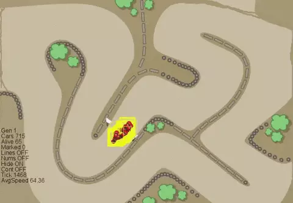
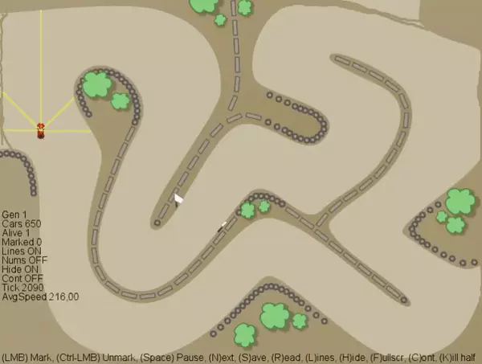
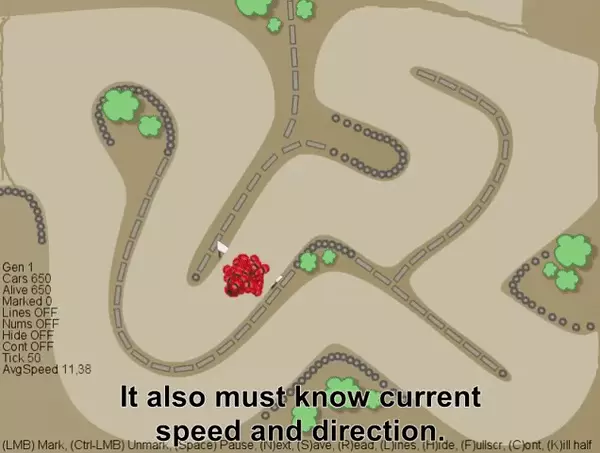
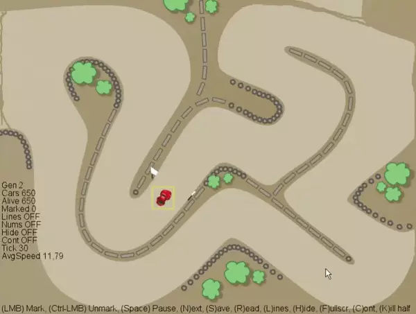
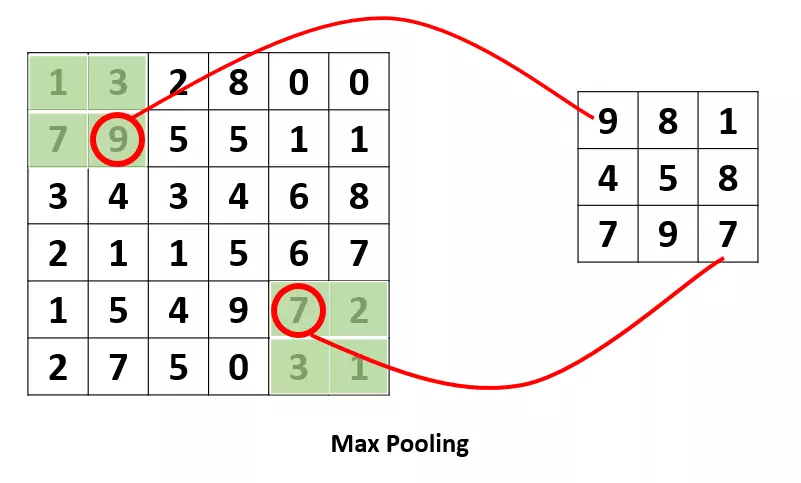
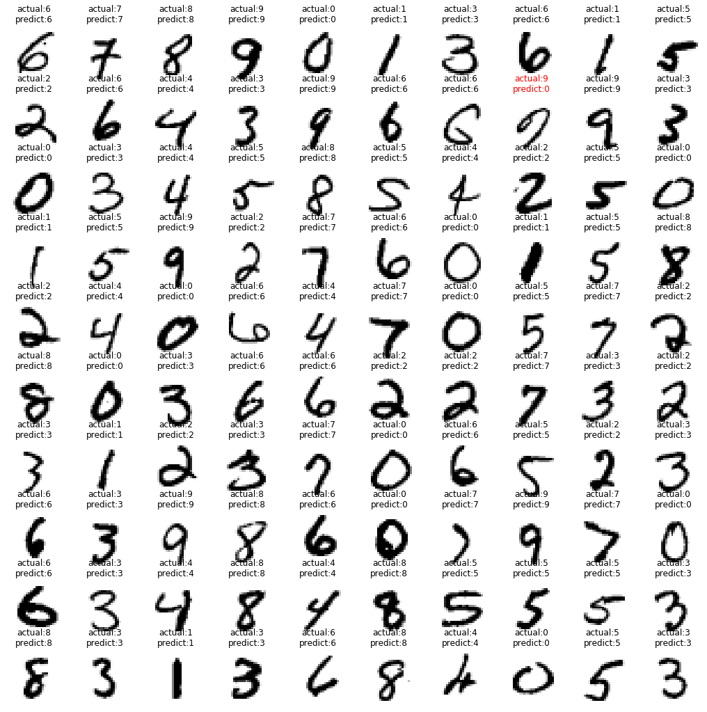

AI赛车手如何快速炼成？
首先，要有一个庞大的车队。
他的训练计划里，有650辆车同时训练
第二，AI开车需要一些空间信息。

输出：方向盘(左转、右转、不变)；油门/刹车(加速、减速、不变)。
第三，让神经网络不断进化

所以，第二代的650辆车，全是这一只智能体的子嗣，各自有些轻微的变异：神经网络的权重发生小小的变化。

池化层

池化层夹在连续的卷积层中间， 用于压缩数据和参数的量，减小过拟合。
简而言之，如果输入是图像的话，那么池化层的最主要作用就是压缩图像。
MNIST手写数据集识别（神经网络图像分类的Hello world）
loss:0.0519 accuracy:0.9842
